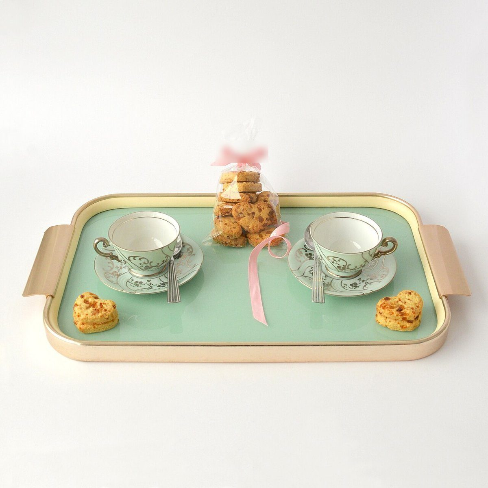

3・コリメーター
メニューは準備中
商品や価格は確認でき次第、ご案内します。ここに並ぶ写真は、ページの見た目を伝えるためのイメージです。
写真イメージ
パンの写真(イメージ)





写真はパンなどのイメージです。お店で提供している商品を写したものではありません。
3・コリメーター
商品や価格は確認でき次第、ご案内します。ここに並ぶ写真は、ページの見た目を伝えるためのイメージです。
写真イメージ

写真はパンなどのイメージです。お店で提供している商品を写したものではありません。